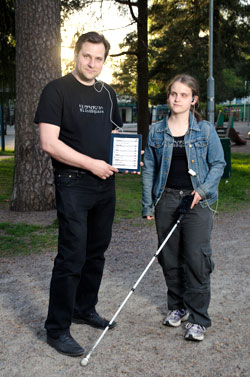
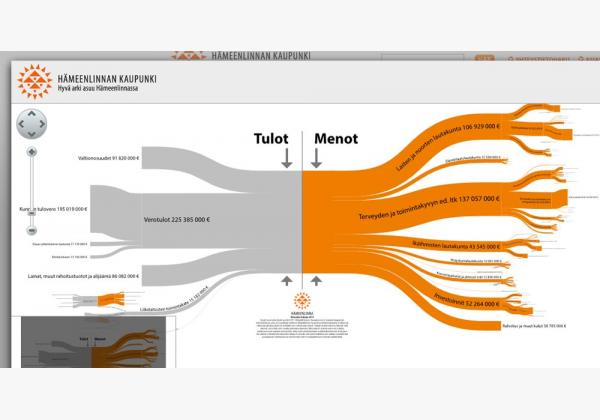

Apps4Finland
kohti ongelmanratkaisua avoimella datalla
Projektipäällikkö Petri Kola / @pe3
jokavuotinen
avoimen datan innovaatio- kilpailu
Järjestäjät: Verkkodemokratiaseura ja Forum Virium Helsinki
useimpiin
ongelmiin
liittyy
ihmisten toimintaa
tai toimimatta jättämistä
datasta voidaan jalostaa
esimerkiksi
käyttöliittymiä, työkaluja tai pelejä
jotka tukevat ongelmien ratkeamista edistävää toimintaa
data voi suunnata
toimintaa
sekä lisätä
ymmärrystä & innostusta
kokonaiskuvan hahmottamiseen
toimivien puitteiden suunnitteluun
auttaa toimimaan järkevästi
tehdä muutoksen näkyväksi
BlindSquare
Miten helpottaa näkövammaisten liikkumista?
Veropuu
Miten nopeuttaa budjettien hahmottamista?
Espoon auringonvalo- ja maalämpökartta

Datalla voi tukea muiden ongelmaan tarttumista
Datapohjaiset ratkaisut
skaalautuvat
ja ovat parhaimmillaan todella hyviä investointeja
Joukkoliikenteen kehittäminen Reittioppaan dataa avaamalla
“Vaikea kuvitella miten olisimme itse saaneet aikaiseksi tällaisen palvelutason nousun näillä resursseilla. Jos olisimme alkaneet tehdä kännykkäsovelluksia itse, rahaa olisi mennyt helposti 50 000 euroa per sovellus”
Jari Honkonen / HSL